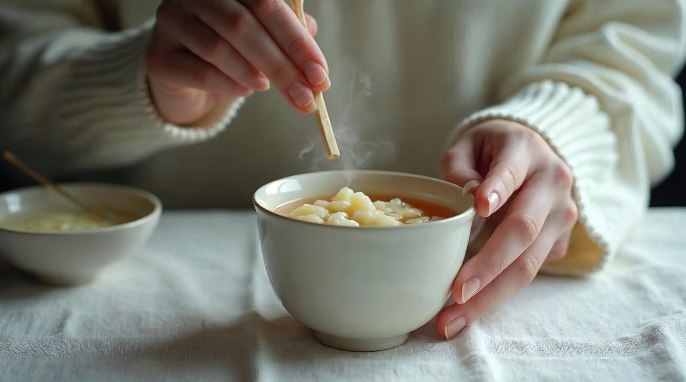

이종호 한의사 감수좋은꿈참사랑한의원 대표원장 (한의사 면허번호 19769)발행 2026-11-24 · 수정 2026-11-26
이 글의 차례
- 왜 이런 불편이 생길 수 있나요
- 왜 긴장하면 배부터 아플까요
- 먼저 이렇게 여쭙니다
- 일상에서 먼저 해 볼 수 있는 것
- 상황별 예시
- 스스로 점검해 보세요
- 비슷한 불편과 어떻게 구분하나요?
- 시험 주간 하루, 이렇게 먹어 보세요
- 한의원에서 함께 살필 수 있는 경우
- 배를 편하게 하는 가벼운 습관은 무엇이 있나요?
- 편의점과 배달 음식, 이렇게 골라 보세요
- 진료를 받는 동안에는 어떻게 지내면 좋을까요?
- 시험 당일 아침은 어떻게 보내면 좋을까요?
- 첫 진료 전에 무엇을 준비하면 좋을까요?
- 얼마나 지켜보고 언제 상담할까요
- 이렇게 기록해 오시면 상담이 쉬워집니다
- 다음 학기에 되풀이되지 않으려면?
- 이런 증상은 먼저 확인이 필요합니다
- 관련 글
시험기간마다 속이 더부룩하고 배가 아프다면, 끼니를 거르지 않고 빈속에 커피를 마시지 않는 것처럼 시험기간에도 지킬 수 있는 식사 리듬부터 잡는 것이 좋습니다. 편의점 음식과 커피, 늦은 밤 배달 음식이 이어지다가 시험 날 아침 배가 살살 아파 화장실을 몇 번씩 들른다는 대학생이 많습니다.
식사 순서부터 바꿔 보시되, 시험이 끝난 뒤에도 불편이 이어지거나 학기마다 되풀이된다면 한 번 살펴보시는 것이 좋습니다.
왜 이런 불편이 생길 수 있나요
- 긴장하면 위와 장의 움직임이 평소와 달라져 더부룩함이나 복통, 설사로 나타날 수 있습니다. 시험 일정이 정해져 있다면 몇 주 앞서 식사와 잠의 순서를 정해 두는 편이 부담이 적습니다.
- 끼니를 거르다 한꺼번에 먹으면 위에 부담이 커집니다.
- 빈속의 커피와 에너지 음료는 속쓰림을 부를 수 있습니다.
- 밤늦은 기름진 음식은 소화가 덜 된 채 잠들게 해 아침 속을 무겁게 합니다.
- 잠이 부족하면 위와 장의 리듬도 함께 흔들리기 쉽습니다.
- 공부하면서 먹으면 씹는 횟수가 줄고 먹은 양을 알아채기 어려워 과식하기 쉽습니다.
- 하루 종일 앉아 있으면 몸을 덜 움직여 장의 움직임도 느려질 수 있습니다.
왜 긴장하면 배부터 아플까요
긴장하면 몸은 위와 장의 움직임을 늦추기도 하고, 반대로 장을 갑자기 바쁘게 움직이게 하기도 합니다. 그래서 어떤 날은 더부룩하고, 어떤 날은 배가 살살 아프며 화장실을 찾게 됩니다.
한의학에서는 생각이 많고 걱정이 이어지면 소화를 맡은 기운이 지친다고 보았습니다. 시험기간처럼 머리를 오래 쓰는 때에 입맛이 떨어지고 속이 더부룩한 것도 같은 흐름으로 이해합니다.
여기에 불규칙한 끼니와 늦은 야식, 부족한 잠이 겹치면 위와 장이 쉬는 시간이 줄어듭니다. 하나하나는 작아도 몇 주가 쌓이면 불편이 크게 느껴질 수 있습니다.
먼저 이렇게 여쭙니다
- 시험기간에는 하루 몇 끼를, 몇 시에 드시나요?
- 더부룩함, 속쓰림, 복통, 설사 중 어떤 것이 가장 불편한가요?
- 시험 당일이나 발표 전처럼 긴장할 때 더 심한가요?
- 커피와 에너지 음료는 하루 몇 잔 드시나요?
- 시험기간에 잠은 몇 시간 정도 주무시나요?
- 대변은 며칠에 한 번, 어떤 모양으로 보시나요?
- 다시 오신 분께는 지난번 이후 식사 시각과 속이 불편했던 때가 어땠는지부터 이어서 여쭙니다.

일상에서 먼저 해 볼 수 있는 것
- 아침을 거르지 말고 바나나나 죽처럼 가볍게라도 먹기
- 공부하며 먹기보다 10분이라도 자리를 떠나 천천히 먹기
- 빈속에 커피 마시지 않기
- 자정 이후 기름진 배달 음식 줄이기
- 식후 바로 엎드려 자지 말고 잠깐 걷기
- 시험 2~3주 전부터 식사 시각을 정해 두고, 시험 주간에도 그 시각을 크게 바꾸지 않기
- 커피와 에너지 음료는 하루 잔 수를 정해 두고 오후 늦게는 마시지 않기
상황별 예시
- 예를 들어 시험 주간에 아침을 거르고 빈속에 아이스 커피로 버티는 학생의 경우, 오전 시험 중에 속이 쓰리거나 배가 살살 아파 집중이 흐트러질 수 있습니다. 바나나나 요거트처럼 가볍게라도 먼저 먹고 커피는 그 뒤에 마시는 순서로 바꿔 볼 수 있습니다.
- 예를 들어 도서관에서 밤늦게까지 공부하다 자정 넘어 치킨이나 떡볶이를 시켜 먹는 학생의 경우, 소화가 덜 된 채 잠들어 다음 날 아침 속이 더부룩하고 입맛이 없기 쉽습니다. 야식을 저녁 식사로 앞당기거나, 늦게 먹더라도 양을 줄이고 먹은 뒤 바로 눕지 않는 것부터 함께 정리해 봅니다.
- 예를 들어 발표나 실기 시험 날마다 아침에 화장실을 여러 번 가는 학생의 경우, 긴장이 장의 움직임에 영향을 주는 흐름일 수 있어 식사뿐 아니라 시험 전 잠과 긴장을 함께 살펴봅니다. 시험 날 아침에는 평소 먹던 익숙한 음식을 조금만 먹고 집을 일찍 나서는 방법도 이야기해 봅니다.
스스로 점검해 보세요
- 시험기간에는 아침을 거르는 날이 많다
- 빈속에 커피나 에너지 음료를 마신다
- 책상 앞에서 공부하며 끼니를 해결한다
- 자정 넘어 야식을 먹는 날이 일주일에 사흘이 넘는다
- 시험 당일이나 발표 전에 배가 아프거나 화장실을 자주 간다
- 시험기간에 잠이 5시간이 안 되는 날이 많다
- 시험이 끝난 뒤에도 2주 넘게 속이 더부룩하다
앞의 여섯 가지는 시험기간 식사와 잠의 순서부터 바꿔 볼 신호이고, 마지막 항목에 해당하면 한 번 상담을 받아 보세요.
비슷한 불편과 어떻게 구분하나요?
속이 불편하다는 같은 말 안에도 여러 흐름이 있어, 언제 어떻게 불편한지를 보고 살피는 방향을 정합니다.
- 식후에 배가 꽉 찬 느낌이 오래가고 트림이 잦다면, 위의 움직임이 느려진 더부룩함 쪽을 먼저 생각합니다.
- 명치나 가슴이 쓰리고 신물이 올라온다면, 빈속 커피나 늦은 야식과 관련된 속쓰림 쪽을 살핍니다.
- 배가 살살 아프다가 화장실에 다녀오면 편해지고, 변비와 설사가 번갈아 온다면 장의 리듬이 예민해진 흐름일 수 있습니다.
- 시험기간이 아닐 때도 같은 불편이 이어진다면, 긴장 말고 다른 원인이 있는지 함께 살핍니다.
스스로 나누기 어렵더라도 언제, 어떤 불편이, 화장실과 어떤 관계로 오는지만 기억해 오시면 충분합니다.
시험 주간 하루, 이렇게 먹어 보세요
시험 주간에도 지킬 수 있을 만큼만 정해 두는 것이 요령입니다.
- 1. 아침에는 일어나서 물 한 잔을 마시고, 바나나나 죽, 요거트처럼 가볍게라도 먹습니다.
- 2. 커피는 아침을 먹은 뒤에 마시고, 오후 늦게는 마시지 않습니다.
- 3. 점심은 책을 덮고 자리를 떠나 15분 넘게 천천히 먹습니다.
- 4. 도서관에 오래 있을 날이라면 저녁을 거르지 말고 조금 일찍 먹습니다.
- 5. 밤에 배가 고프면 따뜻한 차나 가벼운 간식 정도로 넘기고, 먹은 뒤 바로 눕지 않습니다.
한의원에서 함께 살필 수 있는 경우
- 시험기간마다 소화 불편이 반복되는 경우 식사 리듬과 긴장의 흐름을 함께 살핍니다.
- 잠이 부족하고 두통이 함께 있는 경우 생활 전반을 함께 살핍니다.
- 변비와 설사가 번갈아 나타나는 경우 장의 리듬도 이어서 여쭙니다.
좋은꿈참사랑한의원에서는 첫 방문 때 모든 분께 맥부터 짚으면서 시험 일정과 식사 시각, 커피 양, 긴장이 심해지는 때를 여쭙습니다. 혀와 배를 살펴 소화 상태를 보고, 배를 눌렀을 때 단단하거나 불편한 자리가 있는지, 대변과 잠은 어떤지 함께 확인합니다.
그 뒤 필요하다고 판단될 때 침이나 한약 상담 등을 정하고, 남은 시험 일정에 맞춰 식사와 잠의 순서를 계획합니다. 다음에 오시면 지난번 정한 식사 순서를 지켜 본 기록을 이어서 보며 방향을 다시 맞춥니다.
배를 편하게 하는 가벼운 습관은 무엇이 있나요?
식후에는 엎드려 자기보다 10분쯤 천천히 걸어 보세요. 도서관 계단을 한두 층 오르내리는 것도 좋습니다.
배가 살살 아플 때는 따뜻한 물을 조금씩 마시고, 손바닥을 비벼 따뜻하게 한 뒤 배꼽 주위를 시계 방향으로 천천히 쓸어 주세요. 세게 누를 필요는 없습니다.
숨을 길게 내쉬는 호흡도 긴장을 덜어 줍니다. 시험 시작 전 자리에 앉아 넷을 세며 들이쉬고 여섯을 세며 내쉬기를 몇 번 해 보세요.
편의점과 배달 음식, 이렇게 골라 보세요
시험기간에는 편의점과 배달 음식을 피하기 어렵습니다. 그럴 때는 컵라면 하나보다 삼각김밥과 달걀, 두유처럼 몇 가지를 나눠 고르면 속이 덜 부담스러울 수 있습니다.
배달 음식은 튀김이나 아주 매운 메뉴보다 덮밥, 국밥처럼 담백한 쪽을 고르고, 밤늦게는 양을 줄여 주세요.
탄산음료와 에너지 음료는 속을 더부룩하게 하거나 쓰리게 할 수 있어, 물이나 따뜻한 차로 바꿔 보는 것도 좋습니다.
진료를 받는 동안에는 어떻게 지내면 좋을까요?
식사 시각과 불편했던 때를 이어서 적어 오시면 무엇이 달라졌는지 함께 보기 쉽습니다. 시험 일정이 바뀌면 알려 주세요. 남은 일정에 맞춰 식사 계획을 다시 맞춥니다.
시험 당일 아침은 어떻게 보내면 좋을까요?
시험 날 아침에는 평소 먹던 익숙한 음식을 조금만 드시고, 처음 먹어 보는 음식이나 기름진 메뉴는 피하는 편이 부담이 적습니다.
집을 평소보다 일찍 나서면 화장실에 다녀올 여유도 생기고 서두르는 긴장도 줄어듭니다. 시험장에 일찍 도착해 화장실 위치를 미리 확인해 두는 것도 마음을 편하게 합니다.
시험 직전에 커피나 에너지 음료를 급하게 마시면 속이 쓰리거나 화장실이 급해질 수 있습니다. 마시더라도 식사 뒤에 평소 양만큼만 드세요.
시험 사이 쉬는 시간에는 앉아만 있기보다 복도를 잠깐 걷고, 물을 조금씩 마셔 주세요. 긴장된 배를 풀어 주는 데 도움이 됩니다.
첫 진료 전에 무엇을 준비하면 좋을까요?
시험기간 일주일 정도의 식사 시각과 메뉴, 불편했던 때를 적어 오시면 흐름을 보기 쉽습니다. 휴대폰으로 찍어 둔 음식 사진도 도움이 됩니다.
대변 상태와 횟수가 시험기간에 어떻게 달라지는지도 적어 주세요. 말로 하기 어렵다면 메모로 건네주셔도 됩니다.
소화제, 진통제, 유산균처럼 드시는 약과 영양제가 있다면 이름과 횟수를 알려 주세요.
진료 때 배를 살피기 때문에 배를 드러내기 편한 옷이 좋고, 식사 직후보다는 1~2시간 지난 때가 진찰하기 편합니다.
학기마다 같은 불편이 되풀이되었다면 언제부터였는지도 떠올려 와 주세요. 남은 시험 일정을 알려 주시면 그에 맞춰 식사와 잠 계획을 함께 세웁니다.
시험기간에 잠이 줄어든 정도도 함께 적어 오세요. 잠과 소화는 서로 영향을 주고받는 경우가 많아, 둘을 함께 보면 어디부터 바꿀지 정하기 쉽습니다.
혼자 자취하며 끼니를 챙기기 어렵다면 그 사정도 편하게 말씀해 주세요. 편의점이나 학교 식당처럼 지금 쓸 수 있는 곳 안에서 고를 수 있는 방법을 함께 찾습니다.
시험이 끝난 직후 며칠 동안 속이 어땠는지도 함께 떠올려 와 주세요.
얼마나 지켜보고 언제 상담할까요
- 식사 시각과 커피 마시는 순서를 바꾼 뒤 1~2주는 불편한 시간대를 적으며 지켜보세요.
- 시험이 끝나고 2주가 지나도 더부룩함과 복통이 그대로라면 상담을 권합니다.
- 시험기간이 아닐 때도 일주일에 여러 번 배가 아프거나 학기마다 같은 불편이 되풀이된다면, 다음 시험 전에 미리 살펴보세요.
이렇게 기록해 오시면 상담이 쉬워집니다
- 시험기간의 식사 시각과 메뉴
- 불편한 시간대(시험 전, 식후, 밤)
- 대변 상태의 변화
- 하루 카페인 양
- 시험과 발표 일정, 그 무렵의 잠 시간
기록은 한 줄이면 됩니다. 예를 들어 '화요일, 아침 거름, 빈속 커피 1잔, 11시 시험 전 복통, 설사 1번'처럼 적으면 시험기간의 흐름이 잘 보입니다.
다음 학기에 되풀이되지 않으려면?
시험이 끝나면 불편을 잊기 쉬운데, 이번 학기 기록을 남겨 두면 다음 시험 전에 어디서부터 바꿀지 정하기 쉽습니다.
평소에 몸을 조금씩 움직이는 습관도 장의 리듬을 돕습니다. 도서관과 집 사이를 걸어 다니거나 50분마다 일어나 계단을 오르내리는 정도로 시작해 보세요.
소화제나 진통제를 자주 찾게 된다면 그 횟수도 적어 두세요. 드시는 약은 그대로 두시고, 진료 때 함께 확인합니다.
이런 증상은 먼저 확인이 필요합니다
- 검은 변이나 피가 섞인 변을 보았거나, 체중이 이유 없이 줄어드는 경우
- 배가 점점 심하게 아프거나 토하기를 반복하는 경우
이런 신호가 있으면 한의원보다 가까운 병원이나 응급실을 먼저 찾으세요.
관련 글

여쭙는 것
- 시험기간에는 하루 몇 끼를, 몇 시에 드시나요?
- 더부룩함, 속쓰림, 복통, 설사 중 어떤 것이 가장 불편한가요?
- 시험 당일이나 발표 전처럼 긴장할 때 더 심한가요?
생활에서 해 볼 것
- 아침을 거르지 말고 바나나나 죽처럼 가볍게라도 먹기
- 공부하며 먹기보다 10분이라도 자리를 떠나 천천히 먹기
- 빈속에 커피 마시지 않기
한의원에서 함께 살필 것
- 시험기간마다 소화 불편이 반복되는 경우 식사 리듬과 긴장의 흐름을 함께 살핍니다.
- 잠이 부족하고 두통이 함께 있는 경우 생활 전반을 함께 살핍니다.
- 변비와 설사가 번갈아 나타나는 경우 장의 리듬도 이어서 여쭙니다.
먼저 확인이 필요한 신호
- 검은 변이나 피가 섞인 변을 보았거나, 체중이 이유 없이 줄어드는 경우
- 배가 점점 심하게 아프거나 토하기를 반복하는 경우
한눈에 보는 표
| 구분 | 핵심 |
|---|---|
| 여쭙는 것 | 시험기간에는 하루 몇 끼를, 몇 시에 드시나요? 더부룩함, 속쓰림, 복통, 설사 중 어떤 것이 가장 불편한가요? |
| 생활에서 해 볼 것 | 아침을 거르지 말고 바나나나 죽처럼 가볍게라도 먹기 공부하며 먹기보다 10분이라도 자리를 떠나 천천히 먹기 |
| 한의원에서 함께 살필 것 | 시험기간마다 소화 불편이 반복되는 경우 식사 리듬과 긴장의 흐름을 함께 살핍니다. 잠이 부족하고 두통이 함께 있는 경우 생활 전반을 함께 살핍니다. |
| 먼저 확인이 필요한 신호 | 검은 변이나 피가 섞인 변을 보았거나, 체중이 이유 없이 줄어드는 경우 배가 점점 심하게 아프거나 토하기를 반복하는 경우 |
자주 묻는 질문
시험 끝나면 저절로 좋아지나요?
시험이 끝나면 나아지는 경우도 많지만, 학기마다 반복된다면 미리 리듬을 잡아 두는 것이 좋습니다.
소화제를 자주 먹어도 되나요?
가끔은 도움이 될 수 있지만 자주 필요하다면 원인을 함께 살펴보는 것이 좋습니다. 드시는 약은 진료 때 알려 주세요.
시험 전날 저녁은 어떻게 먹으면 좋을까요?
평소보다 조금 이른 시간에 익숙한 음식을 적당히 드시고, 기름지거나 매운 메뉴는 피하는 편이 부담이 적습니다.
시험 주간에도 진료를 받을 수 있나요?
평일은 09:30~20:00(점심 13:00~14:00), 토·일·공휴일은 09:30~15:00에 진료하니 시험 일정 사이에 오셔도 됩니다. 남은 시험 일정을 말씀해 주시면 그에 맞춰 식사 계획을 함께 세웁니다.
시험기간에 한약을 먹어도 되나요?
소화 상태와 잠, 긴장의 흐름을 살핀 뒤 필요하다고 판단될 때 상담합니다. 드시는 약이 있다면 먼저 알려 주시고, 시험 일정에 맞춰 함께 계획합니다.
좋은꿈참사랑한의원은 재진 때 지난번 이야기부터 이어서 여쭙니다. 진료시간과 예약은 오시는 길에서 확인하세요.
어디서 상담받을 수 있나요?
좋은꿈참사랑한의원은 서울 동작구 만양로2길 2 신성빌딩 3층·5층(서울 동작구 상도동, 7호선 상도역 3번 출구 근처)에 있습니다. 한의사 3명(이종호 대표원장, 조영기 수석진료원장, 정원영 진료원장)이 진료합니다. 진료시간은 평일 09:30~20:00(점심 13:00~14:00), 토·일·공휴일 09:30~15:00이며, 방문 전 전화로 확인을 권합니다. 예약은 네이버 예약, 카카오톡 상담, 전화 02-815-7510로 받습니다.
이 글은 일반적인 건강 정보이며 개인의 진단이나 치료를 대신하지 않습니다. 증상이 있거나 복용 중인 약이 있다면 진료를 통해 확인하세요. 치료 효과는 개인마다 다를 수 있습니다.
작성 기준: 일반적으로 알려져 있는 건강 정보를 참고해 정리했습니다(대표원장 감수). 증상 기록은 1~2주 동안 하루 1회, 비슷한 시간에 적어 오시면 지난 상태와 비교하기 쉽습니다.